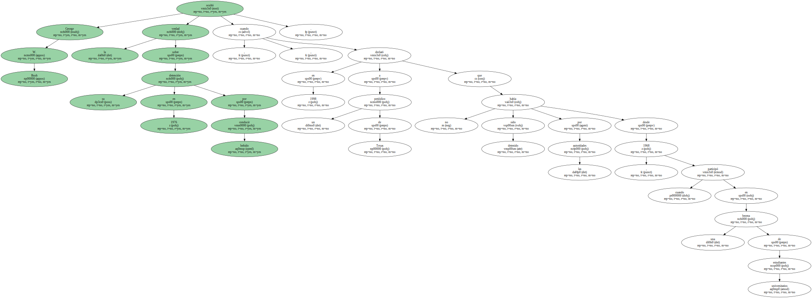
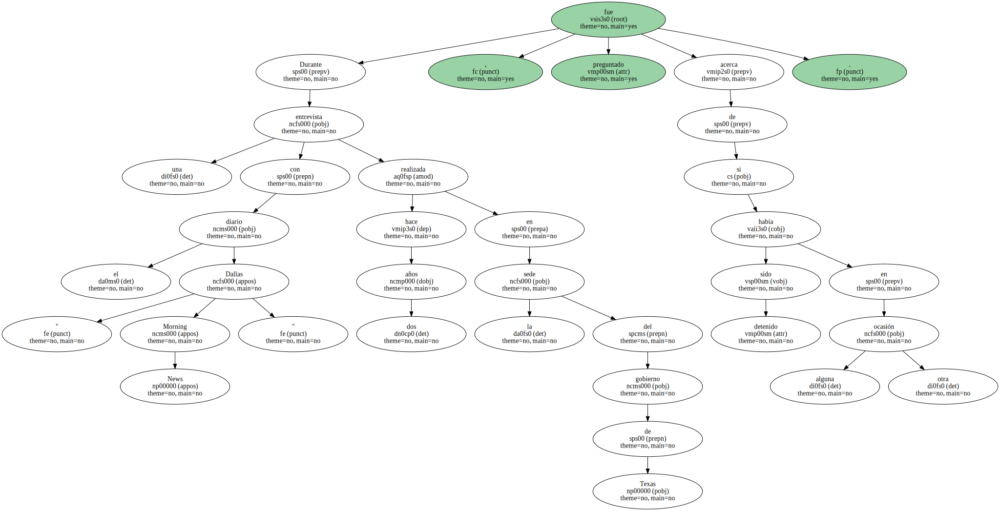
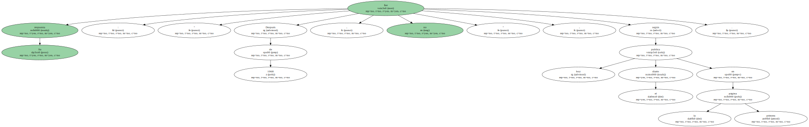
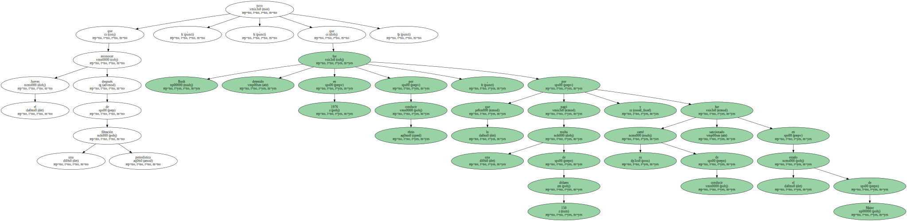
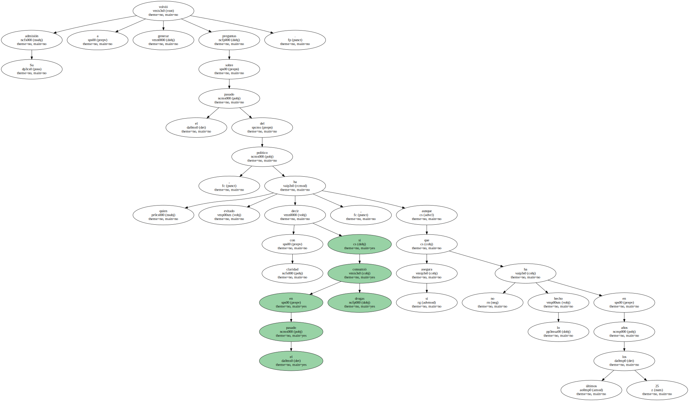
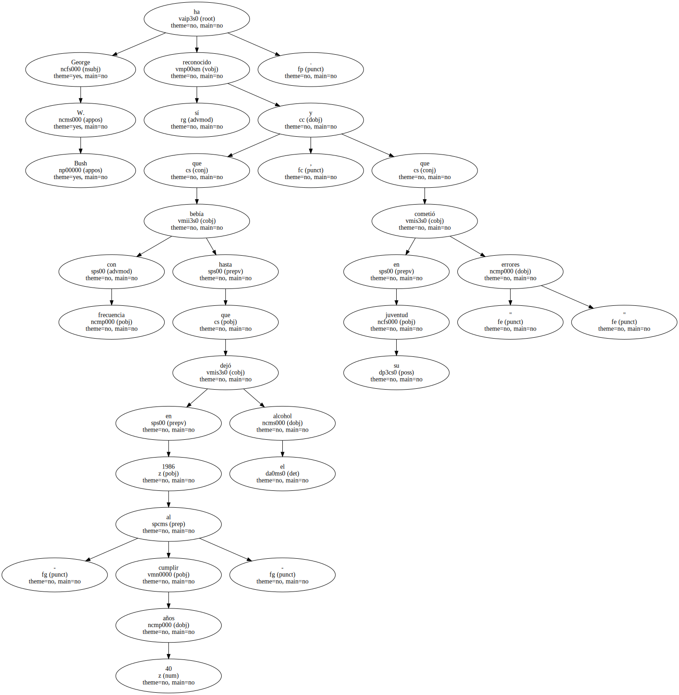

George W. Bush ocultó la verdad sobre su detención en 1976 por conducir bebido cuando , en 1998 , declaró a un periódico de Texas que no había sido detenido por las autoridades desde 1968 , cuando participó en una broma de estudiantes universitarios.
Bush , que en 1968 asistía a la Universidad de Yale , fue detenido junto con otros miembros de su fraternidad estudiantil robando una guirnalda navideña de la puerta de una tienda en New Haven ( Conecticut ).

Durante una entrevista con el diario " Dallas Morning News " realizada hace dos años en la sede del gobierno de Texas , fue preguntado acerca de si había sido detenido en alguna otra ocasión.
Su respuesta fue : " Después de 1968 , no " , según publica hoy el diario en la primera página.
La portavoz de Bush , Karen Hughes , declaró hoy al periódico que el aspirante a la presidencia no recuerda haber dado esa respuesta durante la entrevista , realizada en Austin , capital de Texas.

Bush tuvo que reconocer el Jueves , después de una filtración periodística , que fue detenido en 1976 por conducir ebrio , por lo que pagó una multa de 150 dólares y su carné de conducir fue sancionado en el estado de Maine.
Su admisión volvió a generar preguntas sobre el pasado del político , quien ha evitado decir con claridad si consumió en el pasado drogas , aunque sí asegura que no lo ha hecho en los últimos 25 años.
George W. Bush sí ha reconocido que bebía con frecuencia hasta que en 1986 - al cumplir 40 años - dejó el alcohol , y que en su juventud cometió " errores ".
El gobernador de Texas y candidato presidencial republicano también fue detenido brevemente cuando era estudiante debido a conducta desordenada durante un partido universitario de fútbol americano.